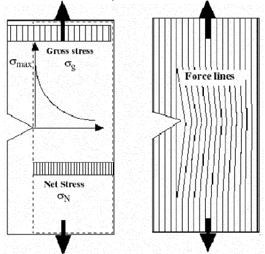
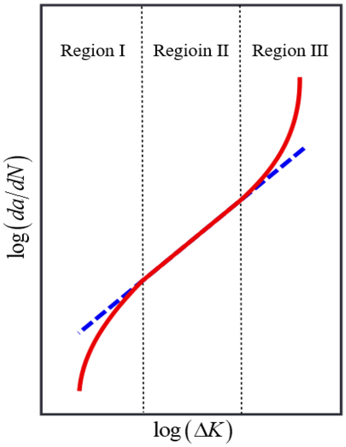

Fatigue Fracture Surfaces
Abstract
Introduction
Fatigue
Fatigue is a common failure mechanism for commercial equipment. Fatigue is the phenomenon where cracks will grow as a material is loaded and unloaded, gradually weakening the materials and eventually causing failure well below the expected yield or tensile strength. Any defects can cause a the stress in the material to be concentrated, allowing the experienced stress at specific points to be far greater then the rest of the material. As the material is loaded, the crack will grow, but eventually reach an equilibrium when the material stops being stretched, with the larger the experienced stress, the faster the crack growth. This growth is also not linear, since the larger the crack the greater the concentration and the faster the growth. This feedback loop causes exponential crack growth. Exponential relationships appear linear in log-log plots, so the exponential relationship between crack growth and change in stress concentration factor in a single cycle can be seen in figure 2. As a result of this exponential relationship, the majority of the cycles are spent forming an initial crack from a defect, called crack nucleation, and when the crack is small, called the short crack growth regime. As a result, the shape, which determines the stress concentration factor, and and the defect size, which determines the starting size of the crack, are key determiners of fatigue performance.  
Laser Powder Bed Fusion
Laser Powder Bed Fusion is (LPBF) an emerging manufacturing method which allows for straightforward small batch manufacturing of complex designs. The ease of manufacturing small batches and the high design freedom allows for high performance designs. This makes it particularly well suited for adoption in the Aerospace industry. An additional requirement for Aerospace parts is goog#| code-overflow: wrap fatigue performance since cyclic loading is ubiquitous in Aerospace applications. Two common initiating defects are surface roughness and defects which result from processing, both of which are inherit part of the LPBF process. A rough surface can be polished, but defects can be embedded into the surface, making them significantly harder to heal. The number of defects can be reduced by optimizing processing parameters. Fatigue, because it is time dependent, is inherently more difficult to study than time independent properties, such as tensile properties. As a result, most studies focusing on process parameter optimization rely on these easier tests, leaving a gap in the literature for studies on fatigue optimization. A study in Professor Lewandowski’s lab addressed this by tested the impact of different processing parameters on the fatigue properties. After fracture, the fractured surfaces were imaged under a microscope, revealing the impact of different defects.
Quantitative Fractography
Fractography is the study of fracture surfaces. This is a largely qualitative field, but there is a emerging field of quantitative fractography which relies on segmenting these images, and then extracting features from these masks. The Lewandowski lab explored the use of quantitative fractography for these images by performing 4 segmentation tasks:
- Segmenting every defect from the fracture surface
- Segmenting only the initiating defect from the fracture surface
- Segmenting the region of fatigue crack growth
- Segmenting the region of overload While significant efforts were made, this is a time consuming process, it can take upwards of 4 hours for a single sample, making use of the entire dataset unfeasible. The existing manually annotated data can be used to train machine learning models to perform this segmentation task on the remainder of the data, allowing conclusions to be drawn on the remainder of the data. This is the primary task done in the remainder of this data.
Data Science Methods
Machine learning is used to segment defects and interesting characteristics from the images. Hypothesis testing is used to show the correlation between the extracted defects and the resulting mechanical properties. The following libraries are needed for python and R.
- os - used for reading paths
- sys - used for adding folders to path
- cv2 - the most powerful library for image processing currently available in terms of both performance and capability
- numpy - allows images to be efficiently worked with as arrays. The foundation for cv2
- pandas - the most popular python library for working with dataframes
- math - used for mathematical functions
- random - used to create random variables
- matplotlib.pyplot - most popular plotting language
Loading Packages
#| echo: true
import os
import sys
import cv2
import numpy as np
import pandas as pd
import math
import random
import matplotlib.pyplot as plt
import re
import datetime
import PILIn addition to these package, the recent release of Meta’s foundation models segment anything and segment anything 2 will be explored for use in characterizing the unsegmented initiating defects from high resolution images. [2] [3]
Exploratory Data Analysis
Explanation of your data set
The dataset mostly consists of unorganized images in 2 folders, and the numerical data is stored in a handful of spreadsheets. The dataframe was created in two parts: 1) The image dataframe, which contains the path to the images and 2) the numerical dataframe where are spreadsheets were merged. The id used to merge these dataframes is the Sample#, which was extracted from the image path using a regex and was cleaned from the existing Sample# column in the numerical spreadsheets. For the image dataframes, different categories were made, and each has a corresponding function which takes a file path as input an returns true for whether the path leads to an image of that category. Data validation is done here to ensure that the categories are well defined. Also, since some categories can have multiple images per Sample#, each path actually points to a csv, which itself can contain multiple image paths.
Data Cleaning
Data cleaning was an iterative process, with the organize data script being run to create a dataframe, then the results analyzed and verified with a jupyter notebook. The organize data script is in it’s own section, and the smaller chucks used to analyze the results are below it. Several sections are not fully cleaned, with the majority of the effort going to the fatigue and overload region, since they are the easiest to verify and should be the simplest task for the model since they are rather large.
Organize data
#| code-overflow: wrap
STITCHED_THRESHOLD = 3000000
UPPER_RED_THRESHOLD = 1000
LOWER_RED_THRESHOLD = 20
check = re.compile(r'''
^
(?:x)?
(?:\d+)?
(?:[a-b])?
[-]?
(?:Copy\ of\ |Overview|_STD_ETD_|Initiation)? # Optional prefixes
[-]?
[\d]?
[-]?
[x]?
(?:\d+)?
[-]?
# Start with EP, NASA, or CMU (case insensitive)
(EP|NASA|CMU)
[-_]? # Optional separator
# Number or O followed by number
(\d+|O\d+)
[-_]? # Optional separator
V?
([E\d]+|\d+) # Version number
[-_]? # Optional separator
(\d+)? # Optional additional number
(?:_MARKED)? # Optional '_MARKED' suffix
# Any characters in between (greedy by default)
(.*)?
\.(png|tif|tiff|jpg)$ # File extension
''', re.VERBOSE | re.IGNORECASE)
def print_dataframe(df):
row_structure = '|{:^50}|{:^10}|{:^10}|{:^15}|'
print(row_structure.format('Column name', 'Nulls','Values','Position'))
i=0# Any characters in between (greedy by default)
for column in df.columns:
nas = df[colum# Any characters in between (greedy by default)n].isna().sum()
print(row_structure.format(column,str(nas),str(len(df[column])-nas),
str(i)))
i+=1
def log_message(file_path, message):
# Get the current date and time
now = datetime.datetime.now()
timestamp = now.strftime('%Y-%m-%d %H:%M:%S')
# Create the log entry
log_entry = f'[{timestamp}] {message}\n'
# Append the log entry to the file
with open(file_path, 'a') as file:
file.write(log_entry)
def clean_Sample_num(x):
try:
m_f = re.match(r'^([A-Z]+)(\d+)-[V]?(\d+|E\d+)[-]?(\d+)?',x)
except TypeError:
return None
if m_f:
if(m_f.lastindex==4):
return m_f.group(1)+m_f.group(2).lstrip('0').lstrip('O')+'-'+
m_f.group(3)+'-'+str(int(m_f.group(4)))
else:
return m_f.group(1)+m_f.group(2).lstrip('0').lstrip('O')+'-'+
m_f.group(3)+'-'+str('1')
else:
return None
def name_to_power(name:str, position:int):
for idx, option in enumerate(process_parameters['Test ID']):
if(option[2] == name[position]):
return process_parameters['P (W)'][idx]
def name_to_velocity(name:str,position:int):
for idx, option in enumerate(process_parameters['Test ID']):
if(option[2] == name[position]):
return process_parameters['V (mm/s)'][idx]
def clean_name(input):
return input.astype(str).str.replace('0','').str.rstrip('.')
def clean_BuildID(input):
try:
match = re.match(r'([A-Z]+)(\d+)',input,re.IGNORECASE)
if match:
prefix = match.group(1).lstrip('O')
numeric_part = match.group(2).lstrip('0')
return prefix + numeric_part
except TypeError:
print(input)
#Adds File if Condition(path) return True
def recursive_search(condition,path:str, file_list:list):
if os.path.isdir(path):
for path_loop in os.listdir(path):
recursive_search(condition,os.path.join(path,path_loop),file_list)
else:
if(condition(path)):
file_list.append(path)
return file_list
#Functions used for Validation
def size(image_path):
img = cv2.imread(image_path)
try:
return img.shape[0] * img.shape[1]
except AttributeEr# Any characters in between (greedy by default)ror:
print('File is corrupted: '+image_path)
return -1
def size_red(image_path):
img = cv2.imread(image_path)
try:
#Convert the image from BGR to HSV color space
hsv_image = cv2.cvtColor(img, cv2.COLOR_BGR2HSV)
# Any characters in between (greedy by default)
# Define the lower and upper bounds for the red color in HSV space
lower_red_1 = np.array([0, 50, 50])
upper_red_1 = np.array([10, 255, 255])
# Any characters in between (greedy by default)
lower_red_2 = np.array([170, 50, 50])
upper_red_2 = np.array([180, 255, 255])
# Create masks for the red color ranges
mask1 = cv2.inRange(hsv_image, lower_red_1, upper_red_1)
mask2 = cv2.in# Any characters in between (greedy by default)Range(hsv_image, lower_red_2, upper_red_2)
# Combine the masks
red_mask = mask1 + mask2
# Count the number of red pixels
red_pixels = cv2.countNonZero(red_mask)
return(red_pixels)
except AttributeError:
print('File is corrupted: '+image_path)
return -1
def is_greyscale(image_path):
img = cv2.imread(image_path)
if len(img.shape) < 3:
return True
if img.shape[2] == 1:
return True
# If the image is color, check if all channels are equal
if np.allclose(img[:, :, 0], img[:, :, 1]) and np.allclose(img[:, :, 1],
img[:, :, 2]):
return True
return False
def is_binary(path):
try:
img = PIL.Image.open(path)
img = img.convert('L')
img_data = np.array(img)
unique_vals = np.unique(img_data)
if len(unique_vals) == 2 and set(unique_vals) == {0, 255}:
return True
else:
return False
except PIL.UnidentifiedImageError:
return False
def is_8bit(path):
try:
img = PIL.Image.open(path)
img = img.convert('L')
img_data = np.array(img)
if img_data.min() < 0 or img_data.max() > 255:
return False
else:
return True
except PIL.UnidentifiedImageError:
return False
#Different columns that would be valuable to have
def valid_image(path):
for i in ['.csv','.hdr','.xlsx']:
if i in path:
return False
if is_8bit(path):
return True
else:
return FalseSegment anything will be used [@kirillov_segment_2023]
def marked(path):# Any characters in between (greedy by default)
if 'marked' in path.lower() and valid_image(path) and
not is_greyscale(path):
return True
else:
return False
def initiation(path):
if ('_001' in path or 'initiation' in path.lower()) and valid_image(path)
and size(path)<STITCHED_THRESHOLD:
return True
else:
return False
def stitched(path):
if ('stitched' in path.lower() or 'composite' in path.lower()) and
valid_image(path) and size(path) >STITCHED_THRESHOLD:
return True
else:
return False
def full_surface_marked(path):
if stitched(path) and (not is_greyscale(path)) and
(size_red(path)>UPPER_RED_THRESHOLD):
return True
else:
return False
def initation_marked_stitched(path):
if stitched(path) and (not is_greyscale(path)) and
(LOWER_RED_THRESHOLD<size_red(path)<UPPER_RED_THRESHOLD):
return True
else:
return False
def fatigue(path):
if 'fatigue' in path.lower() and valid_image(path) and is_binary(path):
return True
else:
return False
def overload(path):
if 'overload' in path.lower() and valid_image(path) and is_binary(path):
return True
else:
return False
def exclude(input):
conditions = ['.hdr', '.csv','.info','.xlsx','.pptx','.s0001','.zip',
'.model']
for condition in conditions:
if condition in input: return True
return False
def check_regex_basename(dict_to_search,search_function, exclude_conditions):
i=0
for key in dict_to_search:
for field in dict_to_search[key]:
basename = field.split('/')[-1]
if not search_function(basename) and not exclude(basename):
print(basename)
i+=1
print('Unselected files: '+str(i))
def regex_basename(pattern):
match = re.search(check,pattern)
if(match):
type_func = clean_BuildID(match.group(1)+match.group(2))
series_func = match.group(3).lstrip("0")
if match.group(4):
posit_idx_func = match.group(4).lstrip("0")
else:
posit_idx_func = None
return type_func, series_func,posit_idx_func
else:
return None
LOG_FILE = '/home/aml334/CSE_MSE_RXF131/lab-staging/mds3/AdvManu/' +
'fractography/combined_df_log.txt'
MESSAGE = 'Added lower threshold for initation_marked_stitched'
manuel_mask_path = '/mnt/vstor/CSE_MSE_RXF131/lab-staging/mds3/' +
'keyence-fractography/manuel_mask'
fractography_path = '# Any characters in between (greedy by default)/mnt/vstor/CSE_MSE_RXF131/staging/mds3/fractography'
csv_dir = "/mnt/vstor/CSE_MSE_RXF131/lab-staging/mds3/AdvManu/fractography/"+
"Sample#csvs"
path_list = [fractography_path,manuel_mask_path]
condition_list = [
valid_image,
initiation,
stitched,
full_surface_marked,
initation_marked_stitched,
fatigue,# Any characters in between (greedy by default)
overload
]
if __name__=="__main__":
# EP04,5,7 + NASA
EP04 = pd.read_excel('/mnt/vstor/CSE_MSE_RXF131/staging/mds3/'+
'fractography/EP04 (Complete)/EP04 Fractographical Data.xlsx')
EP05 = pd.read_excel('/mnt/vstor/CSE_MSE_RXF131/staging/mds3/'+
'fractography/EP05/EP05 Fractographical Data_cycles_added.xlsx')
EP07 = pd.read_excel('/mnt/vstor/CSE_MSE_RXF131/staging/mds3/'+
'fractography/EP07/EP07-Fractographical Data.xlsx')
NASA = pd.read_excel('/home/aml334/CSE_MSE_RXF131/staging/mds3/'+
'fractography/NASA03/NASA Fractographical Data_Chris-Updated 9_2.xlsx',
skiprows=1)
output = pd.concat([EP04,EP05,EP07,NASA])
output['Sample#'] = output['Sample#'].apply(clean_Sample_num)
output.insert(0,'Test ID',output['Sample#'] + '-0')
del EP04
del EP05
del EP07
del NASA
process_parameters =pd.read_csv('/mnt/vstor/CSE_MSE_RXF131/staging/mds3/'+
'fractography/variable-process-parameters.csv')
output['Load Ratio (R)'] = 0.1
output['Scan Power (W)'] =
output['Sample#'].apply(lambda row:name_to_power(row,4))
output['Scan velocity (mm/s)'] = output['Sample#'].apply(
lambda row: name_to_velocity(row,4))
output['Retest']=0
output.head(3)
del name_to_power
del name_to_velocity
del process_parameters
#Brett Spreashsheet
Brett_spreadsheet =pd.ExcelFile('/mnt/vstor/CSE_MSE_RXF131/'+
'staging/mds3/fractography/4-pt Bend Data Master '+
'Spreadsheet_exit_8_27_24.xlsx')
excel_df = pd.DataFrame()
for worksheet in Brett_spreadsheet.sheet_names:
if worksheet not in ['Template','To Test','Retest']:
excel_df = pd.concat([excel_df,
pd.read_excel(Brett_spreadsheet,worksheet)])
del Brett_spreadsheet
#Making key
excel_df['Sample#'] = excel_df['Build ID'].apply(clean_BuildID) + '-'+
excel_df['Build #'].apply(str).apply(lambda x:x.replace('V','').replace(
'.0','')).replace('O','')+'-'+
excel_df['Test #'].apply(str).apply(
lambda x:x.replace('V','').replace('.0',''))
excel_df['Test ID'] = excel_df['Sample#']+
'-'+excel_df['Retest'].apply(str).apply(
lambda x:x.replace('V','').replace('.0',''))
#Austin's spreedsheet
Austin_spreadsheet =pd.ExcelFile('/home/aml334/CSE_MSE_RXF131/'+
'staging/mds3/fractography/MasterSheet_ULI_Ti6Al4V_Fatigue.xlsx')
temp_df = pd.DataFrame()
for worksheet in ['Fatigue Test Table','K calculation']:
if 'Fatigue Test Table' in worksheet:
x = pd.read_excel(Austin_spreadsheet,worksheet,skiprows=1)
x['Cycles'] = x['Cycles @ Failure']
elif 'K calculation' in worksheet:
x = pd.read_excel(Austin_spreadsheet,worksheet,skiprows=0)
if 'ID' in x.columns:
x['Sample#'] = x['ID'].apply(m)
x = x.loc[:, ~x.columns.str.startswith('Unnamed')]
temp_df = pd.concat([temp_df,x])
del x
excel_df = pd.concat([excel_df,output,temp_df])
col = excel_df.pop('Sample#')
excel_df.insert(0, 'Sample#', col)
#Filter Based on Cycles
excel_df = excel_df[excel_df['Cycles'].notna()]
excel_df['σ (Mpa)']= excel_df['σ max initiation (MPa)']
type_counts = excel_df['Cycles'].apply(type).value_counts()
# Any characters in between (greedy by default)
print(type_counts)
excel_df = excel_df[excel_df['Cycles'].apply(lambda x: isinstance(x, int)
or isinstance(x,float))]
excel_df['Cycles'] = excel_df['Cycles'].astype(int)
type_counts = excel_df['Cycles'].apply(type).value_counts()
print(type_counts)
del col
del output
del Austin_spreadsheet
del temp_df
# In[12]:
name = []
column_dict = {}
i=0
column_list = []
for column in condition_list:
temp_list = []
for top_folder in path_list:
temp_list.extend(recursive_search(
column,
top_folder,
temp_list
)
)# Any characters in between (greedy by default)
name.append((column.__name__,len(temp_list)))
column_dict[name[i][0]] = temp_list
del temp_list
print(str(name[i]) +f'\tPosition: {i}')
i+=1
# In[17]:
# In[17]:
check = re.compile(r'''
^
(?:x)?
(?:\d+)?
(?:[a-b])?
[-]?
(?:Copy\ of\ |Overview|_STD_ETD_|Initiation)? # Optional prefixes
[-]?
[\d]?
[-]?
[x]?
(?:\d+)?
[-]?
(EP|NASA|CMU)
# Start with EP, NASA, or CMU (case insensitive)
[-_]? # Optional separator
(\d+|O\d+)
# Number or O followed by number
[-_]? # Optional separator
V?
([E\d]+|\d+) # Version number
[-_]? # Optional separator
(\d+)?
# Optional additional number
(?:_MARKED)?
# Optional '_MARKED' suffix
(.*)?
# Any characters in between (greedy by default)
\.(png|tif|tiff|jpg)$ # File extension
''', re.VERBOSE | re.IGNORECASE)
def regex_basename(pattern):
match = re.search(check,pattern)
if(match):
type_func = clean_BuildID(match.group(1)+match.group(2))
series_func = match.group(3).lstrip("0")
if match.group(4):
posit_idx_func = match.group(4).lstrip("0")
else:# Any characters in between (greedy by default)
posit_idx_func = None
return type_func, series_func,posit_idx_func
else:
return None
def exclude(input):
conditions = ['.hdr', '.csv','.info','.xlsx','.info','.pptx',
'.s0001','.zip','.model']
for condition in conditions:
if condition in input: return True
return False
def check_regex_basename(dict_to_search,search_function, exclude_conditions):
i=0
for key in dict_to_search:
for field in dict_to_search[key]:
basename = field.split('/')[-1]
if not search_function(basename) and not exclude(basename):
print(basename)
i+=1
print('Unselected files: '+str(i))
# In[17]:
check = re.compile(r'''
^
(?:x)?
(?:\d+)?
(?:[a-b])?
[-]?
(?:Copy\ of\ |Overview|_STD_ETD_|Initiation)? # Optional prefixes
[-]?
[\d]?
[-]?
[x]?
(?:\d+)?
[-]?
(EP|NASA|CMU)
# Start with EP, NASA, or CMU (case insensitive)
[-_]? # Optional separator
(\d+|O\d+)
# Number or O followed by number
[-_]? # Optional separator
V?
([E\d]+|\d+) # Version number
[-_]? # Optional separator
(\d+)?
# Optional additional number
(?:_MARKED)?
# Optional '_MARKED' suffix
(.*)?
# Any characters in between (greedy by default)
\.(png|tif|tiff|jpg)$ # File extension
''', re.VERBOSE | re.IGNORECASE)
def regex_basename(pattern):
match = re.search(check,pattern)
if(match):
type_func = clean_BuildID(match.group(1)+match.group(2))
series_func = match.group(3).lstrip("0")
if match.group(4):
posit_idx_func = match.group(4).lstrip("0")
else:
posit_idx_func = None
return type_func, series_func,posit_idx_func
else:
return None
def exclude(input):
conditions = ['.hdr', '.csv','.info','.xlsx','.info','.pptx','.s0001',
'.zip','.model']
for condition in conditions:
if condition in input: return True
return False
def check_regex_basename(dict_to_search,search_function, exclude_conditions):
i=0
for key in dict_to_search:
for field in dict_to_search[key]:
basename = field.split('/')[-1]
if no# Any charadef print_column_counts(df,example=0):
row_structure = '|{:^50}|{:^10}|{:^10}|{:^10}|{:^15}|'
print(row_structure.format('Column name', 'Nulls','Values','Position','Example'))
i=0
for column in df.columns:
nas = df[column].isna().sum()
print(row_structure.format(column,str(nas),str(len(df[column])-nas),str(i),str(df[column].iloc[example])[0:15]))
i+=1
print_column_counts(combined_df)cters in between (greedy by default)t search_function(basename) and not exclude(basename):
print(basename)
i+=1
print('Unselected files: '+str(i))
check_regex_basename(column_dict,regex_basename, exclude)
# %%
dataframe_list = []
for i, key in enumerate(column_dict):
type_column = []
series_column = []
posit_idx_column = []
basename = []
Sample_num = []
path_column = Segment anything will be used [@kirillov_segment_2023]
[]
for j, field in enumerate(column_dict[key]):
if regex_basename(field.split('/')[-1]):
path_column.append(field)
type_inst, series_inst, posit_idx_inst =
regex_basename(field.split('/')[-1])
type_column.append(type_inst)
series_column.append(series_inst)
posit_idx_column.append(posit_idx_inst)
basename.append(field.split('/')[-1])
if posit_idx_iSegment anything will be used [@kirillov_segment_2023]
nst == None:
Sample_num.append(type_inst.upper()+'-'+
str(series_inst)+'-1')
else:
Sample_num.append(type_inst.upper()+'-'+str(series_inst)+
'-'+str(posit_idx_inst))
path_column = pd.Series(path_column,name='path')
type_column = pd.Series(type_column, name='Build ID')
series_column = pd.Series(series_column,name='Build #')
posit_idx_column = pd.Series(posit_idx_column,name='Test #')
basename_column = pd.Series(basename,name='basename')
Sample_num_column= pd.Series(Sample_num, name = 'Sample#')
dataframe_list.append(
pd.concat(
[
Sample_num_column,
path_column,
type_column,
series_column,
posit_idx_column,
basename_column,
],
axis=1
)
)
if not os.path.exists(csv_dir):
os.makedirs(csv_dir)
for i, df in enumerate(dataframe_list):
unique_samples = df['Sample#'].drop_duplicates()
csv_paths = []
for sample in unique_samples:
print(sample)
sample_df = df[df['Sample#'] == sample]
print(sample_df)
csv_path = csv_dir+f'/{sample}_'+name[i][0]+'.csv'
sample_df.to_csv(csv_path, index=False)
csv_paths.append(csv_path)
sample_column = pd.Series(unique_samples, name="Sample#")
path_column = pd.Series(csv_paths, name="path")
new_df = pd.concat([sample_column.reset_index(drop=True),
path_column.reset_index(drop=True)],axis=1)
dataframe_list[i] = new_df
# %%
combined_df = excel_df[-excel_df['Sample#'].isna()]
# all should have a key column
for i, dataframe in enumerate(dataframe_list):
# print(combined_df['Sample#']
)# Any characters in between (greedy by default)
# print(dataframe['Sample#'])
# for j in dataframe['path']:
# # Any characters in between (greedy by default)
# print(j[-30:])
# pass
try:
combined_df = pd.merge(combined_df,dataframe,on='Sample#',
suffixes=('',f'_{name[i][0]}'),
how='outer').drop_duplicates().sort_values(by='Retest',
ascending=False).drop_duplicates('Sample#')
except Exception as e:
print(e)
combined_df.rename(columns={'path':'path_'+name[0][0]},inplace=True)
combined_df.to_cs# Any characters in between (greedy by default)v('/mnt/vstor/CSE_MSE_RXF131/lab-staging/mds3/AdvManu/'+
'fractography/combined_df.csv')
log_message(LOG_FILE,str(len(combined_df))+' :'+MESSAGE)
row_structure = '|{:^50}|{:^10}|{:^10}|{:^15}|'
print(row_structure.format('Column name', 'Nulls','Values','Position'))
i=0
for column in df.columns:
nas = df[column].isna().sum()
print(row_structure.format(column,str(nas),str(len(df[column])-nas),
str(i)))
log_message(LOG_FILE,str(row_structure.format(column,str(nas),
str(len(combineSegment anything will be used [@kirillov_segment_2023]
d_df[column])-nas),str(i))))
i+=1
# for m, i in combined_df.iterrows():
# if(isinstance(i['path_overload'],str)):
# print(i['Sample#'])
# print(i['path_overload'])
else:
print(__name__+' not being run')
Print Data Counts
The below data shows which columns are most common. The most complete columns are Sample#, since that was used to merge the data. The images correspond to the ammount of available data.
#| echo: true
#| output: true
combined_df = pd.read_csv('/mnt/vstor/CSE_MSE_RXF131/lab-staging/mds3/'+
'AdvManu/fractography/combined_df.csv')
def print_column_counts(df,example=0):
row_structure = '|{:^50}|{:^10}|{:^10}|{:^10}|{:^15}|'
print(row_structure.format('Column name', 'Nulls','Values',
'Position','Example'))
i=0
for column in df.columns:
nas = df[column].isna().sum()
print(row_structure.format(column,str(nas),str(len(df[column])-nas),
str(i),str(df[column].iloc[example])[0:15]))
i+=1
print_column_counts(combined_df)Visualize PV surface
#| echo: true
#| output: true
# Lets try to plot the values on PV surface
fig = plt.figure()
ax = fig.add_subplot(projection='3d')
only_one = True
for name, group in combined_df.groupby(['σ (Mpa)']):
if len(group)>= 60 and only_one:
only_one=False
ax.scatter(
group['Scan Power (W)'],
group['Scan velocity (mm/s)'],
group['Cycles'])
print(group['σ (Mpa)'].iloc[0])
ax.set_xlabel('Scan Power (W)')
ax.set_ylabel('Scan velocity (mm/s)')
ax.set_zlabel('Cycles')
plt.show()